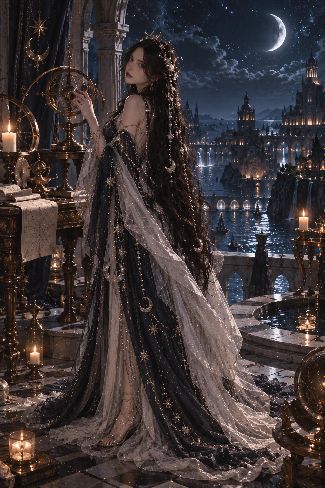
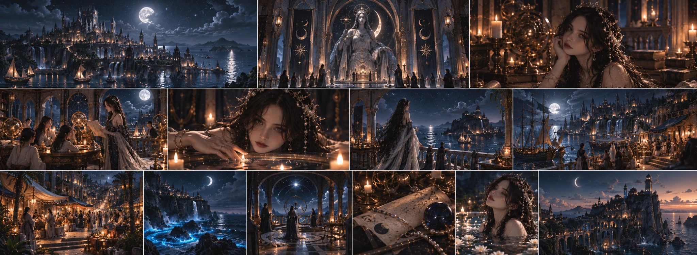

STAR OBSERVATORIES
Built at Nymora’s highest points, the observatories are used not only to study the sky, but to compare celestial records kept for centuries.

Goddess of Night
Night · Ocean · Stars · Prophecy · Intuition · Wisdom · Dreams · Observation
Nora does not see the future as a single immutable, prewritten line.
Explore her teaching ↓Night · Ocean · Stars · Prophecy · Intuition · Wisdom · Dreams · Observation Nora does not see the future as a single immutable, prewritten line.
To her, the future is an endless network of paths in which every decision creates new possibilities. Nora cannot see all these paths with equal clarity; yet she can sense patterns others miss, approaching fractures, and possibilities that connect to one another.
This is why prophecy in Nora’s teaching means not “knowing what will happen,” but “seeing what might happen.” The stars do not give her answers. They leave only signs for those who know how to read them. And this is precisely where Nora’s wisdom lies: in knowing not to declare everything she sees an absolute truth. “Seeing the future does not mean knowing it.”
Nora is the first-born of the seven sisters. Yet being the eldest does not, in her eyes, mean having the right to rule the others. Among her sisters, Nora is often the one who observes before speaking, waits before deciding, and notices details the others overlook. Her silence can make her seem distant. But Nora’s silence comes not from indifference, but from attention.
In a conversation, she listens not only to what is said, but also to what is left unsaid. She notices the small differences between what people say and what they do. She thinks not only of the result a decision will produce today, but also of the path it might open years later.
For this reason, some of her sisters sometimes find being around Nora unsettling. Because you think Nora is judging you. Yet most of the time, she is only trying to understand you.
Uncertainty lies at the heart of Nora’s teaching. People fear the unknown. This is why they want to learn the future, control their fate, and be certain of the consequences of their decisions. Nora, however, believes this desire is dangerous. Because knowing the entire future may not set a person free. On the contrary, it may make them a prisoner of the future they have seen.
For this reason, wisdom in Nora’s teaching is not having all the answers. It is being able to understand which question’s answer should not yet be known. For Nora, the unknown is not a flaw. Nor is darkness emptiness. Night does not erase the world; it merely makes visible what cannot be seen by day. The stars are the oldest example of this. They are there in the daytime, too.
But sometimes, for us to see them, the light must withdraw.
Nymora’s identity has been shaped where ocean and sky meet. Life in the island kingdom is intertwined with the sea. Coasts, ports, and the open sea are not merely means of transport or livelihood; they also shape the way Nymora’s culture thinks. Because the ocean is very much like Nora’s teaching. You cannot know what lies in its depths by looking at its surface.
The sky is the same. For this reason, observing is different from seeing for the people of Nymora. Nora’s influence is felt in the kingdom’s architecture, education, and traditions, especially in its interest in the stars. Observatories, tall towers, and terraces with clear views of the sky are among Nymora’s important structures. Yet the most important legacy Nora has left to the kingdom is not one of its buildings:
It is the tradition of seership.
In Nymora, some people are believed to have stronger intuition and a greater ability to perceive celestial signs than others. But talent alone does not make someone a seer. These people receive training. Nymora’s aspiring seers study the movements of the stars, celestial cycles, old records, symbols, and the outcomes of past prophecies. And one of the first things they are taught is quite simple:
Do not confuse what you see with what you think about it. Because a misinterpreted sign can be more dangerous than one that was never seen. For this reason, Nymora’s seers are trained not only through their intuition, but through their discipline. They are taught that a prophecy alone is not enough to make a decision. A seer can show the path. Yet whether to walk that path is not always up to the person who sees it.
Nora’s relationship with the ocean is based more on listening than ruling. Old accounts of Nymora speak of the sea having a memory. Waves bring to shore not only water, but traces of distant places, fragments of lost journeys, and the first signs of change coming from the rest of the world. For this reason, sailors in Nymora consider reading the sky at least as important as reading the sea.
On nighttime journeys, the stars do more than provide direction. In the eyes of Nymora’s people, they remind us that a human being is only a small part of a great world.
Dreams are another of Nora’s domains. Yet not every dream is accepted as prophecy in Nymora. On the contrary, Nora’s teaching calls on people to be cautious about dreams. Some dreams are our fears. Some are our desires. Some are echoes of our past. And very rarely, some may carry the shadow of a possibility that has not yet come to pass.
Being able to distinguish these is one of the most difficult skills in a seer’s training. This is why, in Nymora, “I had a dream” and “I saw a prophecy” are not the same sentence.
The people of Nymora do not turn to Nora only to learn their future. The captain of a ship about to sail may pray to her not for a calm sky, but to be able to read the signs correctly. Before an examination, a student may ask for a clear mind instead of success. Before a difficult decision, a ruler may wish not for the right answer, but to see what they have overlooked.
Because Nora is not believed to hand out answers to people. Nora’s gift is more like this: Giving someone who knows how to look the opportunity to look more carefully. For this reason, the respect people feel for her also contains a certain distance. It is easy to ask Nora for an answer. Being truly ready to hear that answer is another thing.
Nora is the first-born. Yet her relationship with Yuna is especially important. Nora sees possibilities; Yuna considers the imbalances those possibilities create. Not every future Nora sees comes to pass. Nor can every balance Yuna protects be maintained forever. For this reason, although the two sisters’ views of the world seem close, they are not the same.
While Nora is more concerned with the question “Where might we go?”, Yuna considers “What will we change if we go there?”
One of Nora’s greatest vulnerabilities toward her sisters comes precisely from her ability. Sometimes, she can see a danger before the others. But seeing it does not mean she can prevent it. And waiting without doing anything while knowing of pain that might happen in the future is one of the heaviest burdens Nora bears.
Nora is calm, observant, and measured. She may deliberately keep a distance from people. Not showing her feelings immediately does not mean she has none; on the contrary, she experiences many things more intensely than she appears to from the outside. She is curious, but not intrusive. She is knowledgeable, but does not say everything she knows. Before sharing a possibility she has seen in someone’s future, she asks this question:
“Will knowing this help them, or will it draw them toward that future?” Nora’s greatest virtue is her patience. Her most dangerous flaw can come from the same place. Because she can sometimes prolong the interval between observing and acting more than she should.
“Darkness is not what you cannot see. It is what you have not yet learned to look at.”
Nora

Built at Nymora’s highest points, the observatories are used not only to study the sky, but to compare celestial records kept for centuries.
center where gifted students learn to read the stars, dreams, symbols, and old prophecies. Discipline matters as much as intuition here.
quiet sacred place where people come not to receive certain answers, but to find the right question.
Nora’s statues usually depict her not as a figure ruling the sky, but as one observing it.
The heart of everyday life for the island’s people. For fishers, sailors, merchants, and travelers, the sea is both a livelihood and a gateway to the rest of the world.
Reading the stars in Nymora does not belong only to seers. Recognizing the movements of the sky is part of everyday life, from sailing to farming.
Aspiring seers record the unusual dreams they have; yet no dream alone is accepted as prophecy. Meaning is sought through time and repetition.